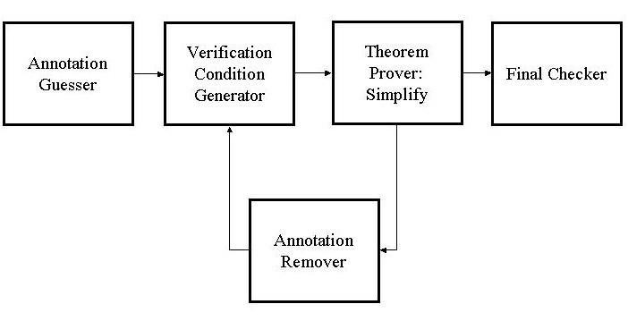
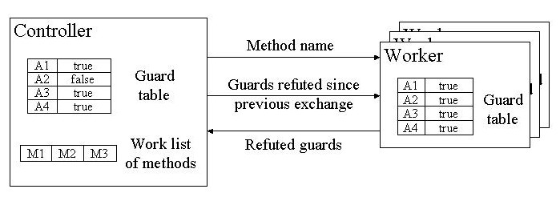

|
University of Pennsylvania milevin@cis.upenn.edu |
|
Compaq SRC cormac.flanagan@compaq.com |
Compaq SRC rustan.leino@compaq.com |
| 1 Introduction
Houdini is a static program checking tool that helps uncover potential run-time errors in Java programs. Among other kinds of errors, it can detect array bound overflows, null dereferences, and division by zero. Houdini is based on an earlier program checker developed at SRC called ESC/Java. While ESC/Java expects the methods in its input programs to be annotated with a sufficient number of pre and post conditions, Houdini drops this requirement and attempts to perform useful analysis even when given unannotated input programs. Initially, Houdini was prototyped using a shell script that iteratively modified the text of the input program and repeatedly called ESC/Java. This prototype was useful in verifying the Houdini approach, but was quite inefficient. Our project goals were to redesign Houdini's architecture to be more independent of ESC/Java and to develop Houdini-specific optimization techniques. The rest of this document describes the original implementation of Houdini and several optimizations introduced by our project. 2 Initial Houdini Prototype The initial version of Houdini works in two stages. First, it guesses a set of preconditions and postconditions for every method in the input program and inserts them directly in the program. Then, it uses ESC/Java to figure out which of the guessed annotations are incorrect. ESC/Java works by converting each annotated method into a formula called verification condition and sending it to the theorem prover Simplify which, in turn, returns a list of incorrect annotations. Houdini then removes these incorrect annotations from the program. Since removing one annotation may cause subsequent annotations to become invalid, Houdini repeats this process until it settles on an appropriate set of annotations. At this point Houdini invokes ESC/Java one final time in order to check the program with respect to the inferred set of annotations. The diagram in figure 1 shows the architecture of this initial version of Houdini. 3 Guarded Verification Conditions One inefficiency of the above approach is that it involves repeated generation of verification conditions from the same methods. Instead we can create a special kind of verification condition, called a guarded verification condition (GVC), just once when Houdini is started. We introduce a unique guard variable for each annotation guessed by Houdini. The GVC of a method has the property that when we substitute true for a guard variable in the GVC, the resulting formula is equivalent to the verification condition produced ESC/Java when the corresponding annotation is present in the program. In addition, when we substitute 
false for a guard variable, the resulting formula is equivalent to the verification condition generated when the corresponding annotation is not present in the program. To implement the above idea, we first modified ESC/Java to produce guarded
verification condition. The new Houdini implementation maintains a truth
value assignment for each guard variable depending on whether the corresponding
annotations has been refuted so far. At each iteration, the implementation
4 Optimizations Our implementation of Houdini employs many other optimizations. A lot of them are too detailed to be introduced in this short document. We focus only on two main optimizations in this section. 4.1 Fine Grained Optimization The basic simplifications mentioned in the previous section are local; they do not exploit the knowledge about verification conditions gained by Houdini over several iterations of substituting and sending them to Simplify. For example, suppose at some point after substituting for guards a verification condition has the Figure 2: GVC Architecture form P ^ Q and turns out to be valid. If at a later iteration after substitution, we find that the verification condition for the same method is of the form P ^ Q', we can simplify it to just Q' since we know that P is valid. Fine grained optimization is a generalization of this basic idea. 4.2 Distributed Implementation Finally, we notice that Simplify is the performance bottleneck of the system and that running Simplify on a verification condition is self-contained. Hence, it is natural to distribute this task over multiple processes. We achieve such distribution by running a central controller and multiple worker processes on different processors and exchanging data between the controller and workers over sockets. The distributed architecture is shown in figure 3. 5 Conclusion The initial Houdini version successfully inferred annotations for a 37,000 line program taking more than 60 hours. The new version incorporating the above as well as many other optimizations performed the same task in a little over 1 hour. We ran the experiment in a 12 worker configuration and the parallelization gave us a factor of 7 speedup. Guarded verification conditions accounted for a factor of 2 improvement. Surprisingly, fine grained optimization did not result in any measurable performance gain. The rest of the improvement came from additional optimizations not discussed here.  Figure 3 Distributed Architecture |